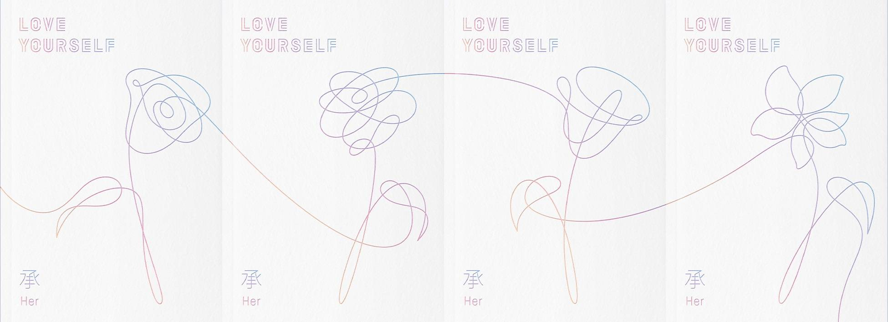

Love Yourself est est le 5ème mini-album des BTS. Sortit le sous le label de Big Hit Entertainment. Cet album, contenant un cd et un photobook de 100 pages, est composé de 9 chansons. La durée totale du CD de cet album est de 44 min et 30 s. Cet album est disponible en 4 versions: L,O,V et E. Les chansons disponibles sur cet album ne varient pas selon la version, seul le disign et le photobook disponible dans l'album changent. Une photocard aléatoire parmi 8 modèle est fourni lors de l'achat de Love Yourself. Une partie des ventes de cet album à été reversé à l'Unicef.
Cette chanson, écrite par RM, Slow Rabbit, Ray Michael Djan Jr, Ashton Foster et Bang Sihyuk, est interprétée par Jimin.Ce dernier ayant également réalisé un clip vidéo de cette chanson.
Jimin ouvre l'album Love Yourself avec Srendipity. Cette chanson suit le titre de l'album puisqu'elle parle d'amour. Calme et reposante, Jimin envoûte l'auditeur avec cette chanson. L'auditeur se retrouve alors transporter dès l'introduction dans l'univers de l'album à venir.
Cette chanson, écrite par Pdogg, RM, Suga, Supreme Boi, Bang Sihyuk et Kass, est interprétée par le groupe bts au complet. Cette chanson possède un clip vidéo.
DNA suit le chemin emprunté par l'introduction et le thème même de l'album. En effet, cette chanson évoque égalment l'amour et de destiné. Elle ne tombe cependant pas dans le cliché puisque la chanson est extrêmement dynamique et joyeuse. Le clip est également très coloré. Le destin évoquer dans les paroles est représenté par l'adn dans le but de montré que tout est préconçu. C'est ce qui a donner le titre à la chanson.
Cette chanson, écrite par Andrew Taggart, Pdogg, Ray Michael Djan Jr. Ashton Foster. Sam Klempner, RM, Bang Si Hyuk, Suga, J-Hope, Adora, est interprétée par le groupe bts au complet. Cette chanson ne possède pas de clip vidéo.
réalisée en collaboration avec les chainsmokers, Best of me s'adresse directement aux fans des bts. En effet, au travers de cette chanson rythmé et joyeuse, les bts montrent à quel point ils travaillent dur et affirment à leurs fans qu'ils donnent le meilleurs d'eux-mêmes dans toutes les circonstances.
Cette chanson, écrite par Allison Kaplan, Matthew Tishler et RM est interprétée par le groupe bts au complet. Elle ne possède pas de clip vidéo.
Dans le monde d'aujourd'hui, la sincérité est quelque chose qui fait défault. Cette chanson nous insite, grâce à ses paroles et à un son entrainant, à être sincère, autant avec soi-même qu'avec ceux qui nous entoure.
Cette chanson, écrite par Pdogg, Jinbo, Kass, RM, Suga, J-hope et Bang Sihyuk, est interprétée par le groupe BTS au complet. Elle ne possède pas de clip vidéo.
Inspirée du mythe du joueur de flûte, Pied Pieper fait ce que les BTS font de mieux: dénoncer les problèmes de la société à travers une musique enjouée. Dans cette chanson, il s'agit de dénoncé le comportement des fans obssédés, à l'origine de comportement fanatiques. L'approche flagrante de Pied Pieper qu'utilise le groupe pour critiquer le milieu même dans lequel ils prospèrent est précisément ce qui les rend si aimés par les fans du monde entier.
Cette chanson, écrite par Slow Rabbit, Suga, J-Hope et RM, est interprétée par le groupe bts au complet. Elle ne possède pas de clip vidéo.
Sea est une piste caché de l'album. Cette chanson n'est disponible qu'en achetant celui-ci. Cette chanson parle de leurs luttes passées et des difficultés qu'ils ont dû affronter, par rapport au succès qu'ils ont maintenant reçu.
Cette chanson, écrite par Pdogg, Bang Sihyuk et Supreme Boi, est interprétée par le groupe BTS au complet. Elle ne possède pas de clip vidéo.
Sur une musique dynamique et pleinne dde sarcasme, cette chanson se moque des personnes de la jeune génération, qui dépensent tout leurs argents sur des choses inutiles au lieu de profiter de la vie.
Cette chanson, écrite par Bang Sihyuk, Pdogg, RM et J-Hope, est interprétée par le groupe BTS au complet. La version originale ne possède pas de clip vidéo mais il en existe un pour la version remixé réalisé en collaboration avec Steve Aoki.
Mic drop est une chanson inspirée du discours d'un discours de Barack Obama. Suite à ce discours, l'action de laisser tomber tomber un micro après un discours ou une déclaration est un devennu un symbole de confiance en soi. Mic drop sert donc à exprimer la confiance des bts envers leurs talents.
Cette chanson, écrite par Slow Rabbit, J-Hope, RM et Suga, est interprétée par le groupe BTS au complet. Elle ne possède pas de clip vidéo.
Dans cette chanson, BTS remercie leurs fans de les soutenir et de les avoirs ammener là où ils en sont aujourd'hui. Cependant, la chanson contient un côté plus sombre. En effet, la chanson est davantage axée sur leurs dépendance et leurs soumission aux demande de leurs fans. Si les fans arrêtent de les suivre, leur carrière touche à sa fin, c'est pourquoi ils font beaucoup d'efforts et travaillent extrêmement dur dans le but de ne jamais décevoir leurs fans.
| rôle dans la création de l'album | noms | nom du studio |
|---|---|---|
| ingénieur d'enregistrement | Pdogg | Dogg Bounce |
| Slow Rabbit | Carrot Express | |
| Supreme Boi | The Supreme Escape | |
| JUNE | Imagine World | |
| Yang Ga, Jung Woo-Yeong | Big Hit Studio | |
| RM | Mon Studio | |
| Suga | Genius Lab | |
| J-hope | Hope World | |
| Docskim | Hoodcave | |
| adora | Adorable Trap | |
| Sam Klempner | Schmuzik Studio in London | |
| Peter Ibsen | Sky Studios | |
| No Yang-Soo, Baek Gyeong-Hoon | Studio T | |
| ingénieur de masterisation | Randy Merill | Sterling Sound |
| producteur exécutif | "hitman" bang | aucun |
| superviseur exécutif | Nine Choi | |
| directeur en chef de la gestion | Kim Sin-Kyu | |
| équipe de gestion | Song Ho-Peom, Kim Sae-Jin, Lee Sung-Seok, Lee Jung-eel, Kim Yoon-Jae, Lee Joong-Min, Oh Gwang-Taek | |
| directeur en chef de la production et du commerce | Lenzo Yoon | |
| équipe commerciale | Park Woo-Jung, Kim soo-lin, In Na-yeob, Kil Hyeon-Jee, Kim Boon-hong, Lee Jee-eun | |
| équipe de négociation des partenariats | Dre Park, Gang Gyeong-Jin | |
| équipe de commerce à l'échelle mondiale | Sin Hyo-Jin, Bae Song-Ho | |
| directeur en chef de la communication | Chae eun | |
| communication avec le publique | Hong Joo-weon, Lee Yoo-Ree, Jo Lee, Park Onnu-Lee | |
| Directeur en chef du comerce à l'échelle mondiale | Lee Hyeok | |
| équipe chargée des finances | Hong Hyeog-Gi, Lee Eun-Jong, Gweon Eun-Sang, | |
| équipe de support de gestion | Lim Jae-dong, Kim Jung-ook, Jee Jun-Soo | |
| Producteur | Pdogg | |
| Co-producteur | "hitman" bang | |
| directeur de la création visuelle | Kim Song-Hyeon | |
| équipe de création visuelle | Lee Hyeon-Joo, Lee Seon-Gyeong, Gabriel Cho | |
| Directeur des prestations | Son Seong-Deuk | |
| Prestations | Lee Ga-Heon | |
| Photo | Kim Hyeong-Sin | |
| MV | Lumpens | |
| Distribution | Loen | |
| art work | HuskyFox | |
| chanteurs, danseurs | Jungkook, Jimin, V, J-Hope, Suga, RM, Jin |
album physique